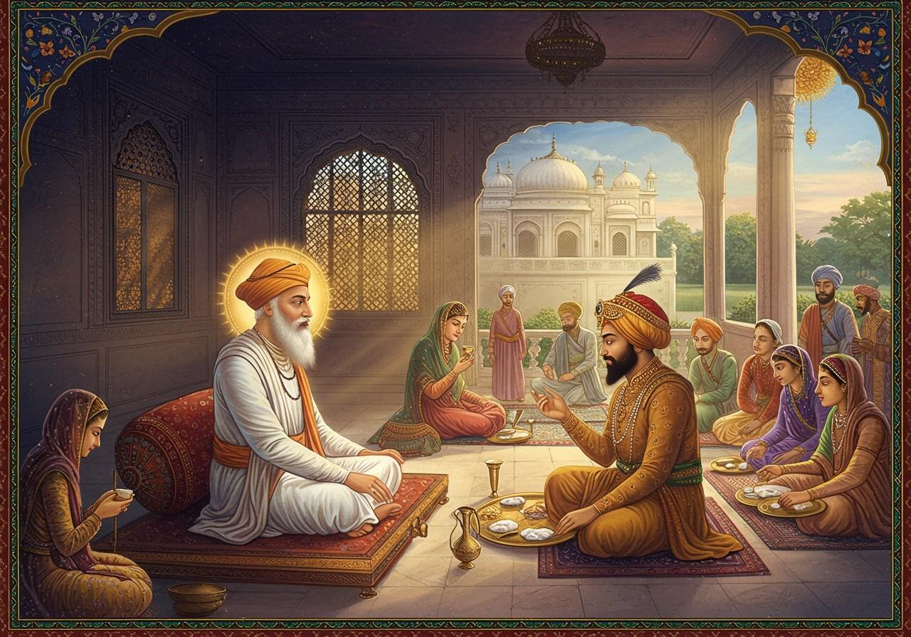

A Story of Humility, Langar, and Equality

Once, the great Mughal Emperor Akbar came to meet Guru Amar Das Ji in Goindwal Sahib. He had heard of the Guru’s wisdom and wanted to seek his blessings and learn more about Sikhism.
When Akbar arrived, he was told that before he could meet Guru Ji, he would first have to sit in the **Langar** (community kitchen) and eat food with everyone, regardless of his royal status.
Akbar, despite being a mighty emperor, humbly agreed. He sat cross-legged on the floor and ate the simple vegetarian meal served with love and equality – just like any other visitor.
After the Langar, Akbar met Guru Ji. He was deeply impressed by the practice of equality in Sikhism. He offered Guru Ji land as a gift, but Guru Ji politely declined and asked him to support the people instead.
Akbar left with a heart full of respect and admiration. The practice of Langar became known far and wide as a revolutionary idea of equality, humility, and service to all.
“In the house of the Guru, all are equal. Even kings must bow to humility and service.”